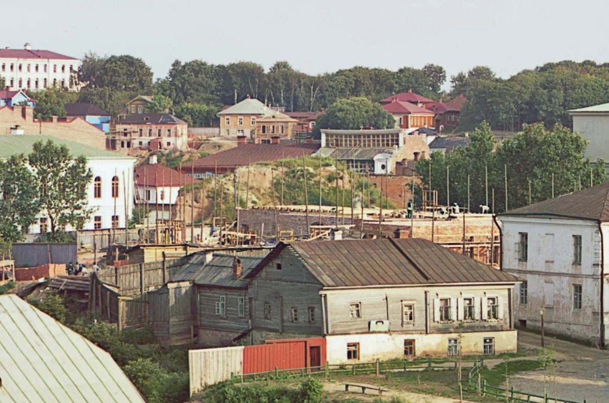
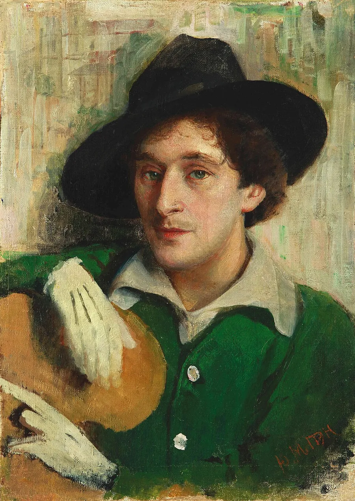
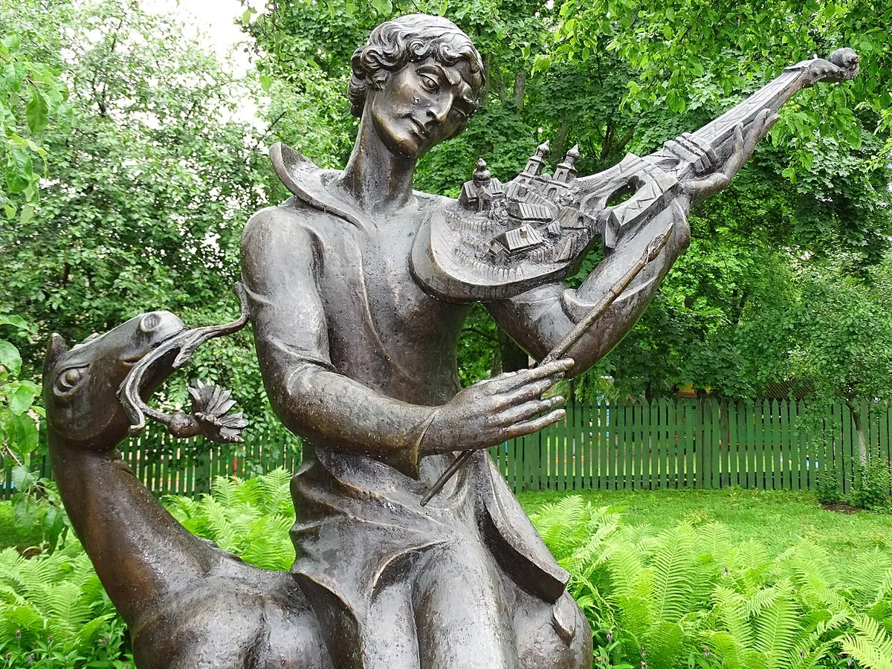
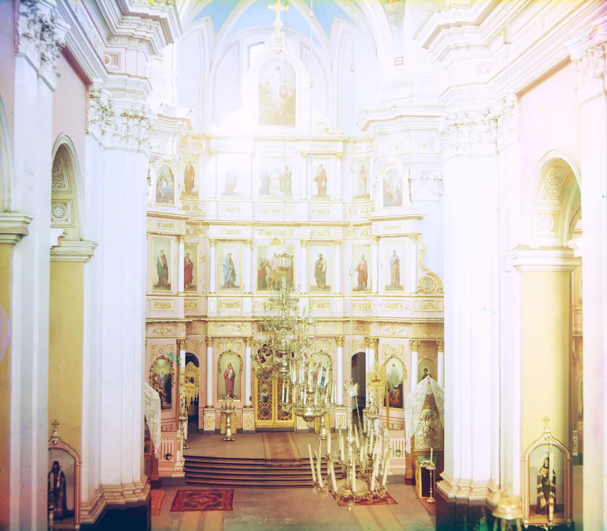

_(cropped).jpg){kind=link}

.jpg){kind=link}
Музей / 3 мин
Дом, где прошла юность художника
Дом на Покровской, 11 построил отец Шагала в начале 1900-х. Художник описал его в книге «Моя жизнь». Музей открыт с 1997 года.
Город, который летал
Онлайн-путеводитель
Витебск — главный город на картинах Марка Шагала. Его улицы, дома и церкви художник пронёс через всю жизнь, а над ними отправил летать влюблённых, скрипачей и коз.
Увидеть Витебск глазами художника

Мальчик из большой семьи, который рисовал всё, что видел вокруг.
Мовша (будущий Марк) Шагал родился 6 июля 1887 года в местечке Лиозно недалеко от Витебска. Он был старшим ребёнком в семье приказчика. Детство прошло в Витебске. С 1898 по 1905 год он учился в 1-м Витебском четырёхклассном училище. Улицы, дворы и заборы родного города позже появятся на сотнях его картин.
Первый учитель и первые уроки настоящей живописи.
В 1906 году Шагал пришёл в Школу рисования и живописи Юделя (Юрия) Пэна. Пэн открыл её в Витебске в 1898 году, это было первое в России еврейское художественное училище. От учителя Шагал перенял мысль, что художник рассказывает о своём народе. Потом была учёба в Петербурге, а в 1911 году — Париж.

Короткий приезд домой, который растянулся на годы.
Летом 1914 года Шагал приехал в Витебск повидать родных и невесту Беллу Розенфельд. Вернуться в Париж помешала Первая мировая война. 25 июля 1915 года Марк и Белла поженились, а 18 мая 1916 года в Витебске родилась их дочь Ида. Белла осталась музой художника на всю жизнь, а влюблённые, парящие над городом, стали его самым известным сюжетом.
Школа, где учиться искусству мог каждый.
После революции Шагал добился открытия в Витебске Народного художественного училища. Первый набор начался 11 ноября 1918 года, торжественное открытие прошло 28 января 1919 года. Преподавать приехали Мстислав Добужинский, Эль Лисицкий, Казимир Малевич, Вера Ермолаева, Юдель Пэн. В 1920 году Шагал уехал из Витебска в Москву.
Жизнь художника
6 июля в семье приказчика Хацкеля Шагала родился первенец Мовша — будущий Марк Шагал.
В мае 1911 года Шагал уехал учиться в Париж, где познакомился с художниками-авангардистами.
28 января 1919 года состоялось торжественное открытие училища. Вскоре его возглавил Шагал.
Шагал с семьёй уехал из страны. С 1937 года он гражданин Франции, но витебские мотивы остались в его картинах до конца жизни.
В доме на Покровской улице, где прошла юность художника, открылся Мемориальный дом-музей Марка Шагала.
Места, которые можно увидеть сегодня


Аудиогид
Покровская улица — маленький кусочек Витебска, из которого вырос огромный мир Шагала. Послушайте, как выглядела она сто с лишним лет назад.
0:00 / 0:00
Экспонат № 001
Здравствуйте! Мы на Покровской улице Витебска. В начале прошлого века здесь стоял обычный кирпичный дом, который построил отец Марка Шагала. Здесь будущий художник провёл юность: смотрел из окна на деревянные заборы, купола церквей и соседей, спешащих по делам. Позже, уже живя в Париже, он писал этот город по памяти снова и снова. На его картинах над витебскими крышами летают влюблённые, на крыше играет скрипач, а по небу шагает корова. Шагал говорил, что носит Витебск с собой, куда бы ни поехал. Сегодня в этом доме работает музей, и каждый может увидеть, где начинался путь художника.
Пройдите по местам Шагала вместе с экскурсоводом. Оставьте заявку, и мы подберём время.